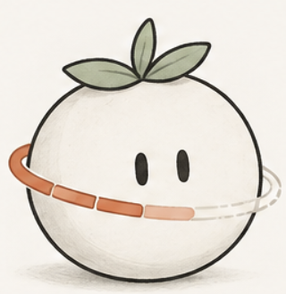
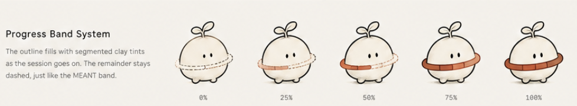
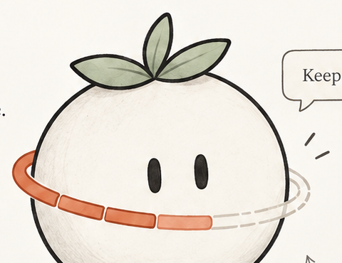
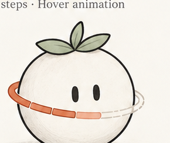
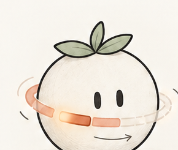
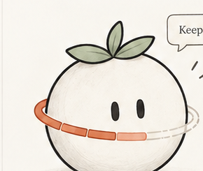
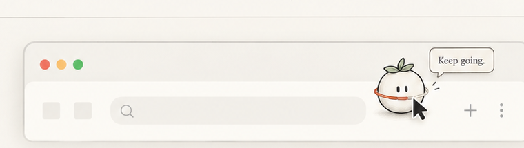

0 1
The Tomato
A soft, familiar silhouette.
A minimal tomato shape with a leaf, wrapped by the session band. Warm, friendly, and memorable without being a literal Pomodoro.

Progress Band System
The outline fills with segmented clay tints as the session goes on. The remainder stays dashed, just like the MEANT band.

0 3
Band Wake
A small movement. A quiet nudge.
On hover, the session band softly wakes up, with a gentle clockwise ripple of clay segments. The companion lifts ever so slightly and shows a small intention to remind you what you're here for.
Familiar, calm, and alive — without breaking focus.


01 Idle
Calm and still. The band shows current progress.

02 Hover · Ripple
Clay segments wake up in a gentle clockwise ripple, one after another.

03 Hover · Settle
The ripple completes and the band returns to rest. A small intention tooltip appears. The companion rests with a tiny, buoyant lift.
Live Interactive Hover Simulation
Hover cursor over the tomato below. Notice the buoyant lift, shadow softening, sequential clockwise ripple through clay segments, and intention tooltip appearance.

In Context
A quiet, delightful moment when you hover over the companion in your workspace.
